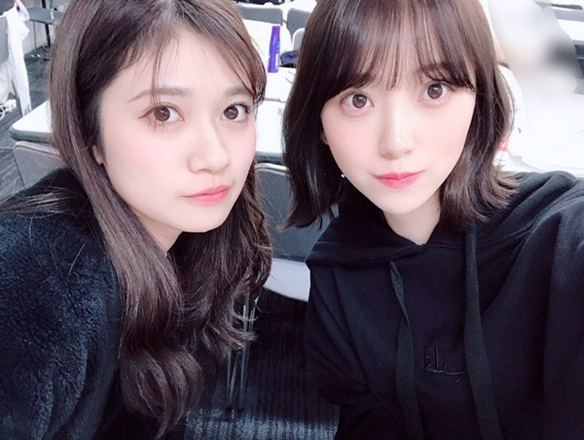

2019/0310Sun泡は苦かった
どうも！
金柑ってまるごと食べても美味しいけど
じゃあみかんは丸ごと食べちゃダメなのかな？
いまいちフルーツのどれが皮ごと食べてよくて
だめなのか把握できてません...
逐一、周りの人に聞いてから食べています。笑

紅白で着たこのドレス、色合いも形もどタイプです✨
かわいい衣装が着れて嬉しいなぁ
衣装さんに感謝感謝です

今日のパーカーはQALBの！
おっきめにきて フードをすっぽり被って楽屋でお昼寝をよくしてます。笑

パッション！らんぜたむ！
ザンビ絶賛放送中です✨✨
怖いかなー？？
でもなんだかんだ人が1番怖いなってホラー作品を観ると毎回思います、


吾輩は平和主義である〜
＼(^-^)／
あ、今日の乃木坂工事中で
私、フラれます。
疑似体験をしたら
こういうのすごくめんどくさそうだなって思ってしまったので私には向いてないですね〜
でもお芝居の中では全力で日村勇紀さんを引き止めますので！見てください✨
では
今日は寝る前に生ハム食べよーと
2019/03/10 19:54


コメント(476)
毎週毎週リアルな怖さでドキドキハラハラさせられるような恐ろしい場面も
あるけど、面白い一面もあるから毎週楽しみで忘れずにちゃんと観ているよ。
苦い泡が更に好きになりました～
最近はネーブルもよく食べています。
紅白のドレス姿もフレッシュですね☆
大きめパーカー女子は可愛いですよ！
らんぜたむのパッションも素敵です♪
ホラー作品は普段あまり観ないですが、
ザンビドラマの行く末は興味津々です◎
乃木中での演技力も迫力がありました！
自分が思ってたイメージ通りでしたよ♡
未央ちゃんの事が更に好きになりました☺
乃木中の演技、魅入ってしまいました！
ブログ更新ありがとうございました！
僕も最後の最後に行ったよ!お疲れのようだったから労いの言葉しかかけれなかったけど。
今度は早く行ってたくさん話したいな!
アルバム個握当たったから行くね!
ブログ更新ありがとうございます！
最近寒暖差が大きい見たいですね！
呉々も体調にはお互い気を付けよう！
演技力面白かったよ～(^w^)
平和主義ばんざーい＼(^-^)／
ザンビ早く見たい！！楽しみすぎる
乃木中も面白かった笑
乃木中観たよ、演技上手かったよ
ザンビ怖すぎて眠れんよー。名古屋での全握未央奈のとこ行くから待っててねー
乃木坂工事中の演技とても素晴らしかった！
涙流したところは流石だと思った！
映画楽しみにしてるで！
おやすみ！
昨日の全国握手会はありがとうございました！
久しぶりに未央奈と握手ができて嬉しかったです！
元気もらいました
ザンビや昨夜の乃木中もそうだけど、
未央奈の演技は大好きです。
あさひなぐの一堂寧々の役を舞台で見た時から、
私は魅了されてます笑
だから映画も楽しみにしてるよ！
乃木中で全力で引き止められた日村さんがうらやましいです笑
お仕事大変だと思いますが、お体には十分に気をつけてくださいね！同じ岐阜県出身者として、いつも誇りに思います。
これからも頑張ってくださいね！
幕張の全握の時のウィンクはありがとうございました！！
すごく綺麗なウィンクだったしずっと推そうと思いました！！
だーいすきっ！
工事中はあくまでそういう設定ってことでしょ。
あれ何の料理だっけ。
肝心のことを忘れてしまった笑
バゲットとチーズ盛り合わせが付いてたの覚えてるからビーフシチューだったかな。
乃木中のみおちゃんの演技すごかったよ！
涙もそうやし、BGMも最高(>_<)
あのタイミングで君に贈る花がないはダメだよ～
ザンビはhuluでしっかり見てるよ。
たまにｶﾀｶﾀｶﾀｶﾀｶﾀｶﾀｶﾀｶって聞こえるとビクってなる笑
みおちゃんはザンビになるか否か！！！
乃木坂工事中見ましたよ。
また今も繰り返して見てます。
「作る料理がマズすぎる」、とは
なんともありえない設定だと思いましたが、
未央奈ちゃんの必死の演技、スッと流せる
涙、すごいと思いました。
未央奈ちゃんにあんなに必死に言われる彼氏に
なれたら幸せだろうな、と思いました。
番組おもしろかったです。
可愛すぎる！！！
みんな皮ごと食べてもよいそうです。
ただ流通過程で
防腐とか防虫とかワックスとかの
薬剤類が使われるため
あまり食べない方がよいようです。
自家製で無農薬栽培するなら
問題ないです。
もっとも皮ごと食べて
おいしいものとそうじゃないものと
ありますが。
一度、「無農薬のミカン、食べてみたい！」
と堀ちゃんがつぶやいてみたら？
農家のファンが送ってくれるかもよ？
工事中見ました。凄く面白かったです。涙も凄かったですけど「もう一回やりなおそ？」の後の潤んだ瞳で頷く様が可愛すぎるというか、あんなもん抗えるわけがないです。最高に魔性でした。
即興演技自体も、強く来たのを返したり逆に弱さで攻めたりと、ちゃんと日村さんとやり合ってたのが見事でした。内容も、ピーマンといい可愛さでねじ伏せようとした所といい、恐らく料理が不味いことまでもが「そこじゃない」で一貫してて、それも良かったです。
この前のザンビでの演技といい、僕は堀さんが相手の心を変えようとしている時のぶつけ方みたいなものがとても好きです。
にしても「不味い料理作りそう」が誉め言葉になるなんて、演技というものは本当に奥が深いですね。
ホットギミックの宣伝活動も頑張ってくださいね。それで来年の日本アカデミー賞新人俳優賞取れるように祈ってます。
乃木中って乃木坂にとって物凄く大事な場所ではあるけれど、言ってもバラエティだし、この企画での出来がそのまま何かのオーディションに繋がっているとか、そういったことでもないわけで、そこで涙を流してまでお芝居するってなかなか出来ることではないと思うんですよ。
だけどそこで全く恥ずかしがらず、妥協せず、与えられた役柄に対して真摯に向き合ってお芝居した堀ちゃんは本当にカッコイイし、肝が据わっているなと思いました。
堀ちゃんの本番に強い感じ、というか、本番が映える感じの理由みたいなものがなんとなくわかった回でした。
うぅおぉおおおおおおおおおお！！！
すんげーのをありがとゅ！(^ ^)
みり愛、絢音、みお、そして日奈子…
ええもう一瞬で眠気が吹っ飛びましたよ！
というかこのあまりにも可愛い過ぎる四人は、全国各地から美少美女が集まるとある学園（共学校）、その学園の代表である各クラスのマドンナの皆さんですかい？るぅえゔぇるが高すぎるんだわ！この子らぁ〜！(>_<)
それはそうと！
みおちゃんは昨日、人見知りをしてはいけないお仕事をしたのかい？僕にはそれがなんなのかわからないけど、きっと大変だったよね…そして絶対に頑張った！そうでしょう？だよね、みおちゃん。お疲れさまですた♪(^ ^)
可愛いです(*´∇｀*)
２期生で好きなコンビ❤
ドレスも素敵です(^^)
初コメ失礼します✋
ずっと前から気になってたのですが、未央奈ちゃん自撮りする時ってなんのカメラアプリとフィルター使ってますか？？
いつもブログの写真の透明感が凄すぎて気になってたので、質問させてもらいました！！
もし良ければ教えてください
そして、未央奈ちゃんの美容情報(？)いつも参考にさせてもらってます！！
コスメだったり、ケアだったり、、、女の子ならではの情報これからも楽しみにしてます
なーこちゃんとお出掛けしたらブログ載せてください♡
まってます♬
まじ卍でした！！
演技力もさることながら、あのピーマンのくだりの瞬発力には脱帽です（笑）
ドラマと主演映画がさらに楽しみになりましたー！
原宿にあるアメリカンイーグルとかGAPとかlevisは買ったりする？。
＼(^-^)／
確かにどれが皮ごと食べて良いか分からない笑
栄養が取れるなら皮ごとが良きかもですね(*´꒳`*)
写真もありがとう
素敵なドレスですよねー･:*+.\(( °ω° ))/.:+
衣装さんってほんとすごいですね（╹◡╹）♡
蘭世ちゃんとの写真もありがとう(● ˃̶͈̀ロ˂̶͈́)੭ꠥ⁾⁾
ザンビこの前の回観ましたよー٩(๑❛ᴗ❛๑)۶
想像してたよりは怖かったかも笑
制服可愛いですね
乃木中観たよー！
演技の上手さ凄かったです(´⊙ω⊙`)
ar4月号、見ました。
P70の一番好き！
トータルコーデ完璧！
笑顔も最高！
二番目に好きなのはP72の右側！
超爽やか！
三番目はP69の左側！
やっと、しゅわ甘さんが入りました。
三つ共、グリーンが入ってるね。
今年はグリーンが流行るのかなあ？
グリーンは俺の好きな色のひとつです。
おもてなし達人への道は毎月楽しみにしています。
今月は俳句の基本習得だったから、
次号の俳句の作品が楽しみです。
早く21日になあれ！
アメトーク楽しみ過ぎる！
それでは健康第一で！
信州のミッキイでした！
ブログ更新、ありがとう。
くだものの皮を食べるか、食べないか問題、結構悩ましいですね。
皮の部分に栄養があると、なおさら。
『ザンビ』
毎回観ています。
初めの頃は、髪とか爪とか、身体の末端から攻められるのが怖かった。
実生活でも、シャワー中に浴室の壁から「どこ行った、隠れたか…」の歌が聞こえてきそうで、脅えてしまいます。
今は、過酷な状況下、少女たちが、何をして生き延びていこうとするか、に注目しています。
お話がどこへ着地するか、未央奈さんの演技も楽しみ。
『乃木中』
キノコを食べて笑い転げる回も、日村さんに手料理が不味いと振られる回も観ました。
もっと、あっさりしたお芝居するのかなと予想していましたが、未央奈さん、熱演！
日村さんを相手に、感情を高ぶらせた様子で涙をみせたり、「ピーマン」と切り返したり、「何だ、あいつ」と落としたり、最後まで主導権を渡しませんでしたね。
勢いのあるお芝居を楽しみました。
『スカッとジャパン』のときとは、また違う女の子で、自分の気持ちをハッキリ言葉にして言える姿がリアルでした。
でも、実際にこういう女の子がいたら、付き合いにくいかな...
ひな壇にいるときから大きく笑っていて、未央奈さんは他の誰よりも、気持ちを解放して、番組出演を楽しんでいるように見えました。
それでは、このへんで。
未央奈さんのお芝居に対する本気が充分伝わってきます。
今日も良き日でありますように。
先日の工事中見ました！演技とても素敵でした⭐️
これからも応援します！！
フルーツでおもい出した! 最近食べた南仏産ドライプルーンが とても美味しかったです。ドライと言っても 半乾き? 半生? なんてゆうの? 柔らかくて種ごとです。種は食べれません 出してください
未央奈の演技は上手くて面白くて可愛かった！
特に「好きだよ」はキュンと来た…w
だから、ますますホットギミックが楽しみになってきてます♪
今月の全握と5月の個握行きます！
楽しみにしてます〜
肌が綺麗で可愛くて憧れです！
私肌が弱いんですけど、おすすめのファンデーションってありますか？？
ブログ更新、ありがとうございます♪
乃木坂工事中、観ましたよ‼︎
未央奈の演技、本当に凄かった♪
先週から続く演技シリーズ、どのメンバーも演技上手だなあと思って見てたけど、未央奈の演技は一段レベルが上でしたね。
だって、あのスタジオの雰囲気の中で役に入って、涙を流せるって凄くないですか？
それだけじゃなく、声の震わせ方とか、表情とか、全てがリアリティがあって、短編のドラマを見ているようでした。
現場で見ていたメンバーから驚嘆の声が上がったのも、その演技のクオリティの高さを物語っていると思います。
きっと業界関係者も、この番組を見ているはず。
そして、この演技に衝撃を受けて、機会があれば堀未央奈に声をかけようと思ったはず…‼︎
いいアピールになりましたね♪
未央奈のその演技が、銀幕の中で見られることを楽しみにしてます♪
ではでは、また。
明日も未央奈にとっていい1日になりますように♪
乃木坂の衣装はどれも可愛いですよね
怖いを通り越して、だんだん悲しくなってきた
ハッピーエンドだといいなぁ。
学園を燃やさなくても、ハッピーエンドだといいなぁ
コメントする